Libertà
Libero arbitrio e libertà d'essere: il valore che sovrasta tutti gli altri.
Manifesto del Movimento
Un'idea di NoskynHK & Sig.Lev: un'utopia concreta, nata come progetto scolastico e ormai completa, fondata su libertà, uguaglianza e sui diritti della comunità LGBTQIA+ e dei femboy — simbolo del movimento.

“La vera libertà non è fare ciò che si vuole, ma permettere a ciascuno di essere ciò che è senza paura del giudizio.”
Principio fondativo del Noskynismo
Libero arbitrio e libertà d'essere: il valore che sovrasta tutti gli altri.
Nessuna discriminazione: parità assoluta di diritti e di dignità per tutti.
Ogni forma di relazione è accolta, senza ostacoli imposti da preconcetti.
Il sito è diviso per aree: la storia e l'ideologia, i diritti fondamentali, l'economia, la cultura del popolo noskyniano — e poi l'inno, la tessera e il tuo contributo.
La storia, l'organizzazione e l'amministrazione del popolo.
La Carta dei Diritti Noskyniani: libertà, uguaglianza, tutele.
Il Minimo Vitale Levvino, la meritocrazia, la B.C.U.
Istruzione, arte, moda e il significato dell'emblema.
Ascolta l'inno ufficiale del movimento.
Crea e scarica la tua tessera di adesione.
Proponi idee, modifiche e aggiunte.
Bandiere arcobaleno, il simbolo della pace e una nuova generazione che guarda avanti con il segno del movimento in mano.
⇩Scarica il posterDal tramonto delle vecchie ideologie alla nuova organizzazione e amministrazione del popolo noskyniano.
Il percorso che porta ai valori noskyniani.
Fin dagli albori della civiltà, le ideologie convenzionali hanno sistematicamente tradito e deluso la popolazione, conducendola verso la disperazione e l'annientamento delle libertà fondamentali dell'essere umano.
I nostri valori possiedono la forza di rivitalizzare tutto ciò che l'umanità è stata costretta a cedere in un mondo dominato dalla corruzione, dall'avidità e dalla gelosia — restituendolo ai suoi veri figli.
Un mondo in cui libertà, libero arbitrio, amore incondizionato e rispetto assoluto cessano di essere chimere per diventare realtà — guidato dai valori spirituali e morali fondati dal movimento.
Bandire l'individualismo, non l'individuo.
La visione del Noskynismo trascende la speculazione filosofica per configurarsi come un'utopia concretamente realizzabile, guidando la collettività verso un cambiamento radicale orientato al bene comune — superando le filosofie individualiste su cui si fonda il capitalismo odierno.
Nell'era noskyniana non troveranno più spazio razzismo, discriminazione e disuguaglianza. Ogni individuo gode di parità assoluta in termini di libertà, diritti e dignità sociale; i retaggi discriminatori del vecchio mondo sono proibiti e affrontati con percorsi di riabilitazione etica.
Ogni forma di relazione è accolta senza ostacoli imposti da preconcetti egoistici. Il valore di un individuo non risiede nel genere o nelle origini, ma nel contributo che offre alla società — e una legge dedicata tutela i femboy nel mostrarsi liberamente per ciò che sono.
Neutralità, coesione e rieducazione etica al posto della punizione.
Per preservare una coesione duratura tra i popoli, il Noskynismo adotta la neutralità assoluta come pilastro: nessun compromesso con dottrine che giustifichino violenza o conflitto bellico, e nessuna azione che possa arrecare sofferenza psicologica o fisica.
Chi viola questi principi non viene punito in modo tradizionale, ma affronta un percorso di rigenerazione etica — settimane di rieducazione intensiva pensate per dissolvere ogni residuo di aggressività e riportare la mente verso la pacificazione totale.
Nuovi sistemi scolastici, radicalmente innovativi, avranno il compito di innalzare il livello culturale della popolazione e di rimuovere pregiudizi e retaggi del vecchio mondo, ponendo le basi per una civiltà rigenerata.
I pilastri fondamentali dell'utopia, oltre a quanto già scritto nel manifesto: le libertà e le tutele che ogni cittadino porta con sé.
Nessuno può essere discriminato per genere, identità di genere, orientamento sessuale, origine, aspetto o condizione economica. La comunità LGBTQIA+ e i femboy, simbolo stesso del movimento, godono di piena tutela e rappresentanza.
Ogni cittadino ha diritto a esprimere liberamente il proprio pensiero, anche in forma artistica o giornalistica, purché non inciti alla violenza o all'odio. L'informazione pubblica è libera, plurale e indipendente dal potere economico.
Ogni fede, o l'assenza di essa, è rispettata allo stesso modo. Nessuna religione ha un ruolo privilegiato nello Stato noskyniano.
La sanità pubblica è universale e gratuita, e comprende la salute mentale allo stesso livello di quella fisica, senza stigma né discriminazione nell'accesso alle cure.
Nessun cittadino può restare privo di un'abitazione dignitosa. Il Minimo Vitale Levvino garantisce un pavimento economico sotto il quale nessuno può scendere.
Ogni cittadino ha diritto a un impiego equo, in condizioni sicure, con orari sostenibili e tutele contro lo sfruttamento, indipendentemente dal settore o dal tipo di contratto.
I dati personali di ogni cittadino sono protetti da ogni forma di sorveglianza indebita, sia pubblica che privata. Ognuno decide come e con chi condividere le proprie informazioni.
L'accesso a aria, acqua e territorio non inquinati è un diritto e non un privilegio. Il modello energetico noskyniano, fondato sul nucleare pulito di nuova generazione, è posto al servizio di questo diritto.
Oltre alla rappresentanza, ogni cittadino può proporre e votare referendum su questioni di interesse collettivo, contribuendo direttamente alle decisioni che riguardano la comunità.
Un pavimento garantito per tutti, un mercato aperto per chi produce di più, e una banca centrale che tiene tutto in equilibrio.
Base garantita
Un diritto strutturale, non un premio, finanziato dalla fiscalità generale:
Fascia meritocratica
Guadagni aggiuntivi e risorse scarse distribuiti secondo criteri misurabili:
Banca Centrale dell'Unione
Emette il Levvino e risponde di tre compiti:
La ricchezza accumulata tramite il merito è tassata più severamente se non viene reinvestita in attività produttive o collettive, per evitare che il sistema meritocratico si trasformi in una nuova aristocrazia economica.
Ogni taglio del Levvino, emesso dalla Banca Centrale dell'Unione, raffigura un monumento simbolo di una civiltà diversa — a rappresentare l'apertura e i legami tra i popoli dell'Unione dei Levvini. Al centro di ogni banconota, l'emblema del Noskynismo. Tocca una banconota per ingrandirla.
Quanto vale il tuo denaro nel Noskynismo? Il tasso della B.C.U. è semplice: 2 franchi = 1 Levvino. Gli altri cambi sono indicativi e inventati: è un gioco.
Il Levvino non esiste (ancora): il cambio non vale nei negozi!
Istruzione, arte e città aperte: come il Noskynismo immagina la vita quotidiana — e il significato del proprio emblema.
Dalla seconda media in poi, un'ora settimanale è dedicata all'educazione sessoaffettiva e di vita: consenso, parità di genere, rispetto per la comunità LGBTQIA+, ma anche tasse, colloqui di lavoro e diritti sul posto di lavoro. I compiti a casa lasciano spazio a progetti di gruppo, per allenare problem solving, lavoro di squadra e leadership.
Le città non hanno più confini né mura: sono aperte e collegate tra loro. L'arte supera i vecchi canoni estetici di genere. L'energia viene dal nucleare di nuova generazione — pulito, sicuro, inesauribile — visto non come minaccia ma come trionfo dell'ingegno umano.
Ogni individuo può indossare per strada ciò che meglio esprime la propria identità, al sicuro da ogni giudizio. Il valore di una persona non dipende da genere o origini, ma da ciò che sa offrire alla società.
L'emblema ufficiale del Noskynismo, con i suoi elementi e il loro significato.
Cuore dell'emblema: rappresenta i femboy e, più in generale, la comunità LGBTQIA+, posti come simbolo di libertà d'espressione e di identità del movimento.
Circondano il fiocco a richiamare l'amore incondizionato e la leggerezza che il Noskynismo promette come valori quotidiani, non solo ideali astratti.
Il classico richiamo araldico alla dignità e all'unione del popolo, qui reinterpretato per un movimento che si vuole comunque radicato in una tradizione, sia pure nuova.
Il valore che sovrasta tutti gli altri nel Noskynismo: nessun diritto, economico o sociale, ha senso senza la libertà di essere ciò che si è.
Il riferimento ai due fondatori del movimento, a firma dell'origine e della paternità dell'idea.
In questo mondo utopico, ogni individuo cammina per le strade indossando ciò che meglio esprime la propria identità — senza timore di giudizio o discriminazione. Le gonne, capo tradizionale del movimento, ne rappresentano la libertà.
L'inno ufficiale del movimento. Alza il volume e lasciati portare.

Inno ufficiale
NoskynHK & Sig.Lev
Impossibile riprodurre l'audio. Prova a scaricarlo.
Scrivi il tuo nome, crea la tua tessera di adesione al Noskynismo e scaricala con un clic.
PDF A4 con fronte e retro a misura reale (85,6 × 54 mm), pronto per una card in PVC o per un adesivo. Stampa al 100%.
Verifica una tessera →L'immagine viene creata sul tuo dispositivo: il tuo nome non viene inviato a nessuno.
Il Noskynismo è completo, ma le idee migliori nascono dal popolo. Proponi una modifica o un'aggiunta: leggiamo tutto.
Organo di Informazione e Cronaca
Il giornale del Noskynismo: ogni settimana esce un nuovo numero. Qui trovi anche tutti quelli passati.
Inserisci il codice N. della tessera, oppure scansiona il suo QR code, per scoprire di chi è.
La verifica controlla che il codice sia stato generato da questo sito. È una tessera simbolica del movimento.
Svoboda · Libertà
Hai trovato il segreto più nascosto. La libertà non si regala: si cerca.